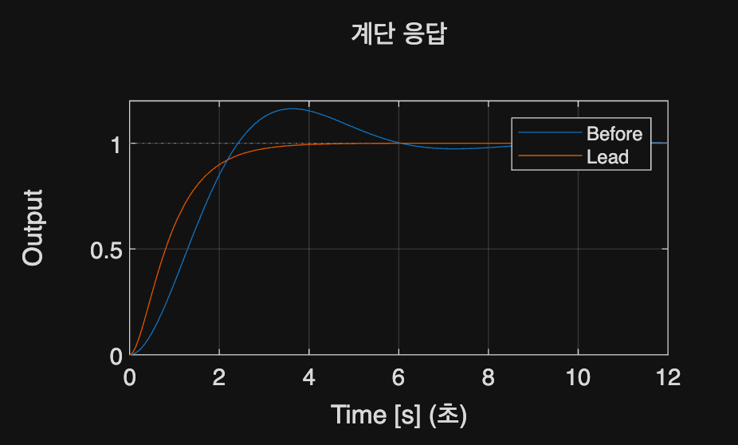

Compensator Design · 학습
실행 조건
MATLAB · Control System Toolbox
이번에 배울 내용
빠르기·감쇠·Steady-State Error를 함께 맞춰야 할 때 Lead와 Lag 중 무엇을 조정할지 판단합니다.
전체 흐름
성능 목표 → 보상기 Pole·Zero → Closed-loop 응답 → 속도·오차 비교
보상기에 맡길 역할 정하기
응답 속도·감쇠·Steady-State Error를 Gain 하나로 모두 맞추기 어려우면 Pole·Zero를 추가합니다. 먼저 원하는 성능을 수치와 단위로 정한 뒤 보상기 종류를 선택합니다.
설계와 검증을 구분하기
Lead는 위상·빠르기, Lag는 Low-Frequency Gain과 Steady-State Error를 조정하는 데 주로 사용합니다. 설계점이 맞아도 입력 비용이나 다른 Pole이 문제일 수 있습니다.
같은 Step·Ramp 조건과 충분한 기록 구간으로 보상 전후를 확인합니다.
같은 DC Gain의 Lead 보상
G(s)=1/(s(s+1)), C(s)=(s+1)/(0.2s+1)를 비교합니다. C의 DC Gain을 1로 둔 상태에서 응답 모양이 어떻게 달라지는지 봅니다.
%% Worked example
s=tf('s'); G=1/(s*(s+1)); C=(s+1)/(.2*s+1); t=linspace(0,12,1201)';
figure; step(feedback(G,1),feedback(C*G,1),t); legend('Before','Lead');
xlabel('Time [s]'); ylabel('Output'); grid on; disp(dcgain(C));
참고 예제
추가 예제 보기
참고 자료